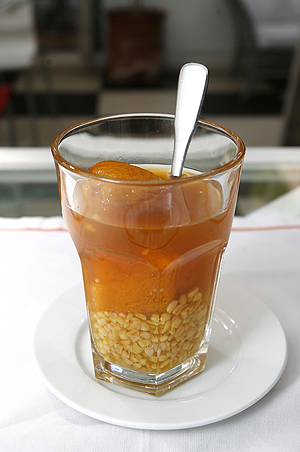
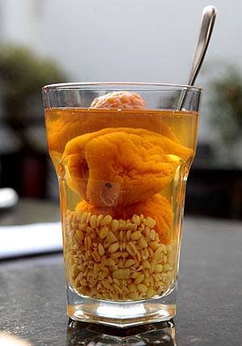

Receta de un rico mote con huesillo Gourmet.cl
Aqui puede encontrar la receta de un rico mote con huesillo, para que pueda disfrutar en casa.
Receta

Receta de un rico mote con huesillo RecetasNestle.cl
Aqui puede encontrar la receta de un rico mote con huesillo, para que pueda disfrutar en casa.
Receta